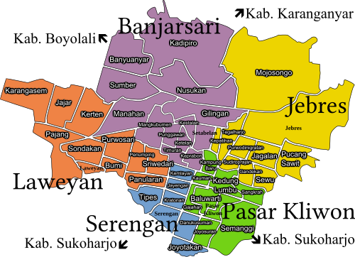

Solo, The Spirit of Java
Infografis Geografi Kota Surakarta
Kota Surakarta, atau lebih dikenal sebagai Solo, merupakan salah satu pusat kebudayaan dan perekonomian di Provinsi Jawa Tengah yang terletak di lembah Sungai Bengawan Solo dengan ketinggian sekitar 92 meter di atas permukaan laut dan luas wilayah ±44,04 km². Kota ini beriklim tropis basah dengan suhu rata-rata 23–33°C dan curah hujan tahunan sekitar 2.200 mm, sehingga mendukung kegiatan pertanian perkotaan serta lingkungan hijau.
Secara administratif, Surakarta terdiri atas lima kecamatan, yaitu Laweyan, Serengan, Pasar Kliwon, Jebres, dan Banjarsari yang dikelola oleh pemerintah kota di bawah kepemimpinan wali kota dan wakil wali kota. Struktur perekonomian kota didominasi oleh sektor perdagangan, jasa, industri kreatif, serta pariwisata yang berkembang pesat berkat peran aktif masyarakat dan dukungan investasi swasta.
Dalam aspek sosial, masyarakat Surakarta dikenal terbuka, berpendidikan, dan berbudaya tinggi dengan keberadaan lembaga pendidikan unggulan seperti Universitas Sebelas Maret. Kota ini juga terkenal dengan warisan budaya dan destinasi wisata seperti Keraton Kasunanan, Pura Mangkunegaran, Pasar Klewer, serta Kampung Batik Laweyan yang memperkuat julukannya sebagai “Kota Budaya.”
Di bidang industri, Surakarta mengandalkan sektor tekstil, batik, kerajinan, dan makanan olahan, sekaligus mengembangkan ekonomi digital dan UMKM berbasis budaya untuk mendukung pertumbuhan ekonomi daerah yang berkelanjutan.
Secara administratif, Surakarta terdiri atas lima kecamatan, yaitu Laweyan, Serengan, Pasar Kliwon, Jebres, dan Banjarsari yang dikelola oleh pemerintah kota di bawah kepemimpinan wali kota dan wakil wali kota. Struktur perekonomian kota didominasi oleh sektor perdagangan, jasa, industri kreatif, serta pariwisata yang berkembang pesat berkat peran aktif masyarakat dan dukungan investasi swasta.
Dalam aspek sosial, masyarakat Surakarta dikenal terbuka, berpendidikan, dan berbudaya tinggi dengan keberadaan lembaga pendidikan unggulan seperti Universitas Sebelas Maret. Kota ini juga terkenal dengan warisan budaya dan destinasi wisata seperti Keraton Kasunanan, Pura Mangkunegaran, Pasar Klewer, serta Kampung Batik Laweyan yang memperkuat julukannya sebagai “Kota Budaya.”
Di bidang industri, Surakarta mengandalkan sektor tekstil, batik, kerajinan, dan makanan olahan, sekaligus mengembangkan ekonomi digital dan UMKM berbasis budaya untuk mendukung pertumbuhan ekonomi daerah yang berkelanjutan.

| Kecamatan | Ibukota Kecamatan Capital of District |
Luas Daerah Total Area (km2) |
Jumlah Penduduk Total Population |
|---|---|---|---|
| Laweyan | Penumping | 9,13 | 88.978 |
| Serengan | Serengan | 3,08 | 48.567 |
| Pasar Kliwon | Joyosuran | 4,88 | 79.972 |
| Jebres | Jebres | 14,38 | 139.321 |
| Banjarsari | Banyuanyar | 15,26 | 172.241 |